A Private Italy Proposal
Four ways to spend two weeks in Italy, built around the coast, the countryside, the lakes and the mountains. September 2027.
Prepared For
You said outdoors over big cities, so that is how I built these. More boat days, hikes and long lunches in the vineyards. Less time in museum lines.
Ellen and Barrett, each route is about fourteen nights between September 15 and 30, with at least three nights in every place so you never feel like you're packing every other morning. For every stop I've given you two hotels: a splurge and a smart pick that I'd still happily send you to. Mix and match. Once you know which direction you like, I'll price both tiers for your exact dates.
What to expect on price. The hotels in this proposal generally run from about €1,000 to €3,500 a night in late September. In the Dolomites it's more like €1,000 to €2,200. We can mix and match: splurge where it matters most to you and save somewhere else.
Where you can't really save. I'll be upfront: on the Amalfi Coast and Lake Como, there isn't a true save option I'd send you to. The hotels worth staying at in both places are all splurges, so I've labeled them that way. The real savings are in Tuscany, on the Riviera (Grand Hotel Miramare instead of the Splendido is a great example) and in the Dolomites.
The Collection
About fourteen nights each · three nights minimum per stop · late September, harvest season
These are starting points, not fixed packages. Any stop can grow or shrink by a night, and any hotel can be swapped.
Itinerary One · A taste of everything
Amalfi Coast → Rome → Florence → Tuscany
The Italy everyone pictures, with each stop built around being outside. Rome is kept short and saved for the one thing worth it.
The Journey
Arrival
Fly into Naples. A private car to the coast, or a 15-minute helicopter to the helipad at Scala, above Ravello.
In Between
A private car to Rome (about four hours), or a car to Naples and the fast train. Rome to Florence is the one leg where the train wins: about 90 minutes, with porters and a driver at both ends. Then a private car out into the hills.
Departure
Fly home from Florence, or drive back to Rome for more flight options.
Going south to north means the coast comes first while the sea is still warm. You finish in the countryside, which is a better place to wind down than a city.
This is the classic first trip to Italy, built for people who would rather be outside. You get the Amalfi Coast from the water, Rome in three nights instead of five, Florence from a hotel with a garden, and then real countryside during the grape harvest.
The Feel · Rated
The Appeal
A bit of everything · the Colosseum done properly · Tuscany in harvest season · easy trains between the cities.
Worth Noting
The most city time of the four · four hotel changes · Rome and Florence are still busy in late September.
Keith's take: If you've never been and want to see the famous parts without the trip feeling like a checklist, this is the one. Rome gets three nights and one great morning, and the rest is outside.
Days Out
Where You'd Stay
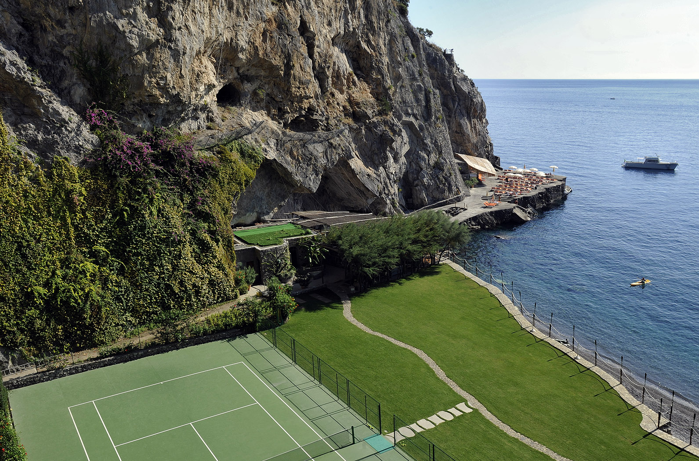
Just outside Positano
Carved into the cliffs just outside busy Positano, with a sunset beach club and free boat shuttles into town. It's the classic, done properly.
My review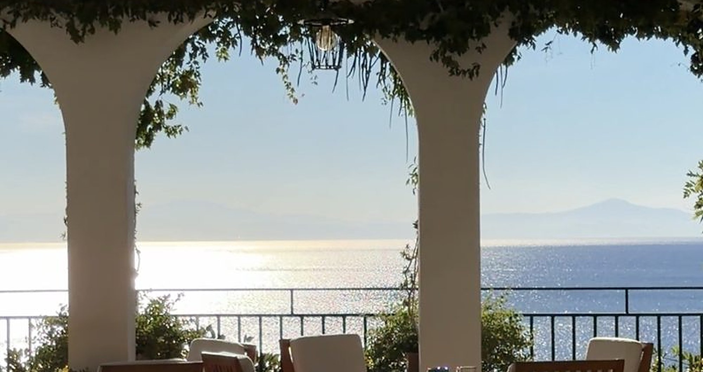
Amalfi
Family-owned for four generations, with a lido at the bottom of the cliff and an old-school warmth I loved when I stayed in October.
My reviewTo be honest, there isn't a save option on the Amalfi Coast that I'd send you to. The good hotels there are all splurges. Le Sirenuse, Borgo Santandrea and Villa Treville are the other three I'd consider.
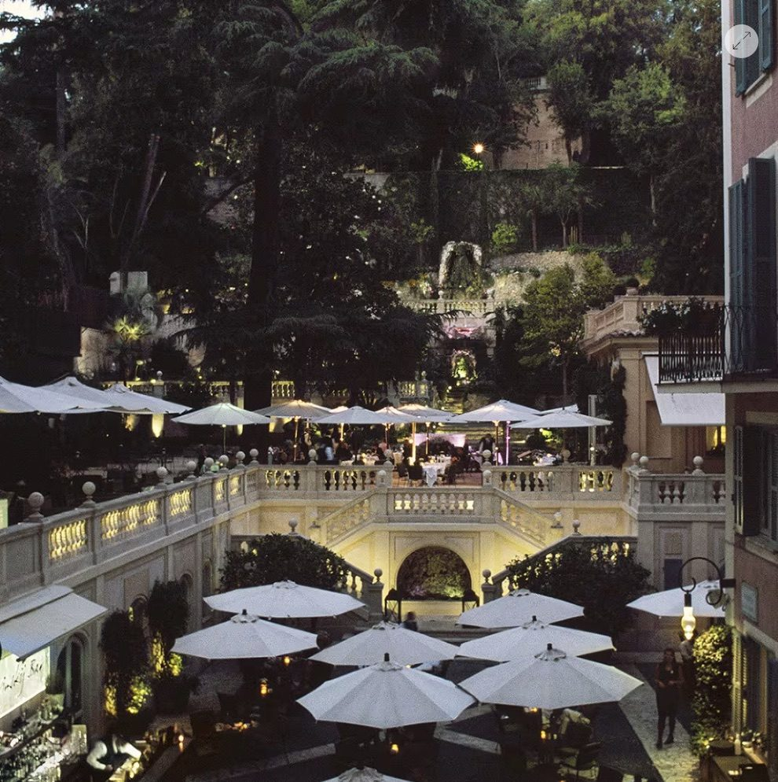
Piazza del Popolo
I loved this hotel. A big garden courtyard, a real spa with an indoor pool and a calm base in the middle of Rome.
My review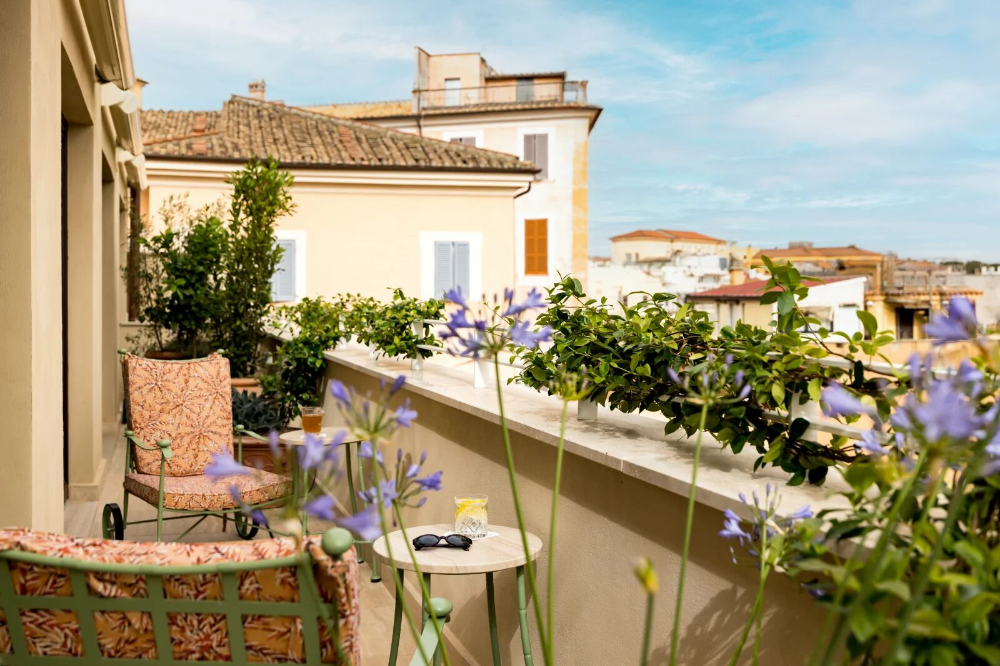
Monti
A small boutique hotel surrounded by real trattorias, with a beautiful rooftop and a lovely team. Rome without the formality.
My review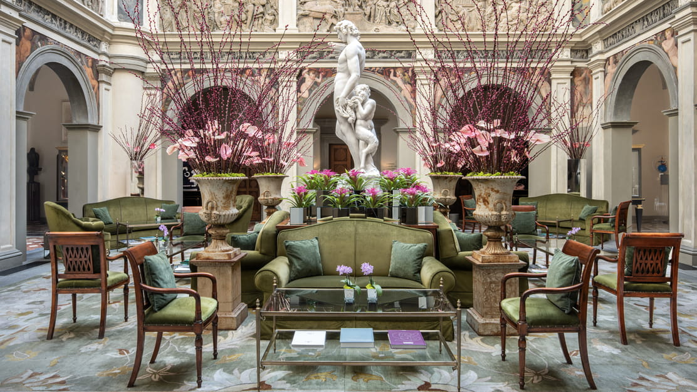
Inside one of the city's largest private gardens
Two Renaissance palazzos and a huge garden, so it feels like a resort inside the city. The best fit in Florence for people who don't love cities.
My review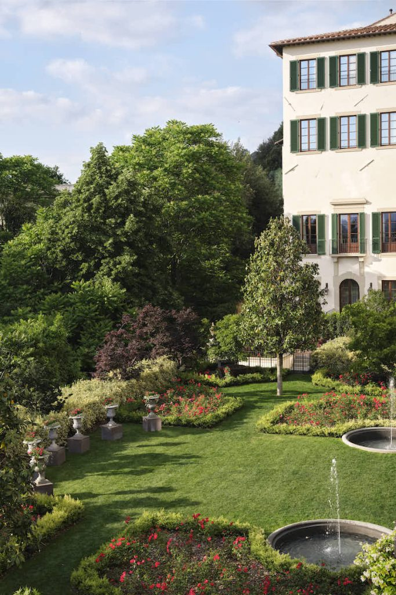
The hills above Florence
Quiet and green, with views from almost every room. It feels like the countryside, and the city is a scenic walk away.
My review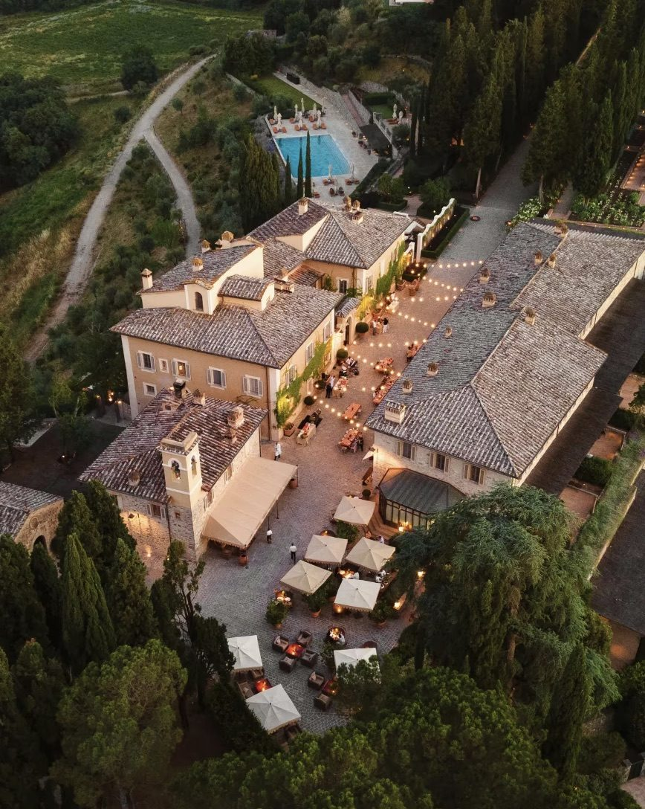
Val d'Orcia, near Montalcino
My top Tuscany pick. A 5,000-acre estate with its own Brunello winery and trails, and room to roam without ever getting in the car.
My review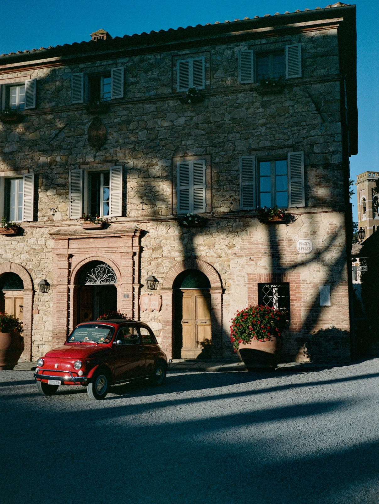
Chianti, outside Siena
A perfectly restored medieval village among the vineyards. It's the most well-rounded borgo in Tuscany, and one of my favorite stays so far.
My reviewOther smart picks: Il Borro, the most authentic stay I've found in Tuscany, and Borgo Pignano, a quiet hilltop borgo near Volterra.
Pricing Once you pick a direction, I'll quote both hotel tiers for your exact dates, with my Fora and Virtuoso perks: typically breakfast, a hotel credit and an upgrade when available. Transfers, the Colosseum tour and the days out are quoted separately.
Itinerary Two · The most relaxed
Florence & Tuscany → Santa Margherita → Lake Como
Three stops, about four or five nights each, and no drive over three hours. Vineyards, then the Italian Riviera, then the lake.
The Journey
Arrival
Fly into Florence, with a private car into the Tuscan hills and a day in Florence whenever you want it.
In Between
A private car to the coast, about three hours, with a lunch stop if you'd like one. Then about two and a quarter hours up to Lake Como, finishing by private boat to your hotel's dock.
Departure
Lake Como to Milan Malpensa, about an hour by car.
This is the easiest route of the four: three bases, nothing long between them, and an open-jaw flight from Florence home out of Milan. Florence is a day trip, not a stay.
This is northern Italy at its most relaxed. Countryside first, then Santa Margherita Ligure, a real Riviera town where Milanese families still spend their summers, next door to Portofino. You finish on Lake Como, where the best days are spent on a boat.
The Feel · Rated
The Appeal
Only three hotels · short drives · the sea and the lake on one trip · very little city time.
Worth Noting
No Amalfi Coast and no Rome · the Riviera is gentler and less dramatic than Amalfi.
Keith's take: This is the one I'd pick for myself if the goal is two weeks of actually relaxing. It's the most unhurried route here, and late September is a great time to be on the Riviera.
Days Out
Where You'd Stay
Val d'Orcia, near Montalcino
My top Tuscany pick, with 5,000 acres and its own Brunello winery. It's the farthest from Florence of these, so it's best if Florence is a maybe.
My review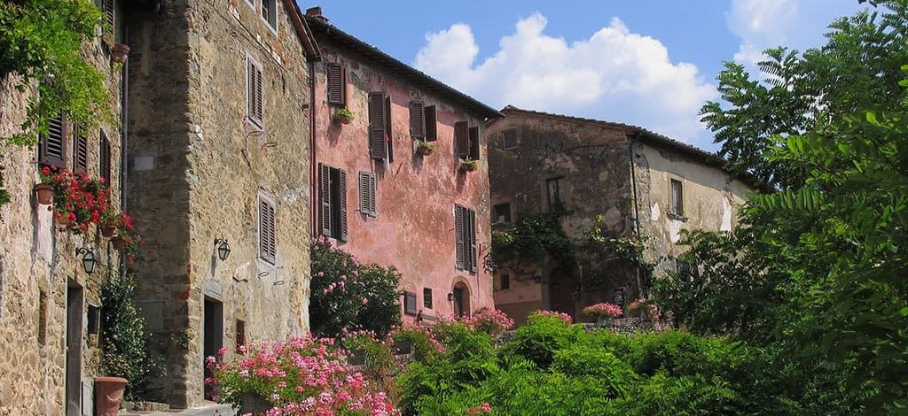
Valdarno hills, about an hour from Florence
A whole medieval village turned into a hotel, and the most authentic stay I've found in Tuscany. Ask for a room in the original village.
My reviewAlso lovely: Borgo San Felice in Chianti and Borgo Pignano near Volterra, which also makes the drive to the coast a little shorter.
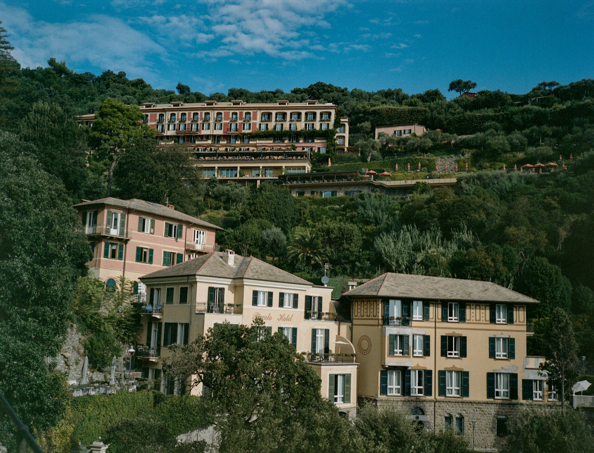
Above Portofino harbor
Belmond's Riviera showpiece, terraced above the harbor. The Italian Riviera at its most cinematic.
My review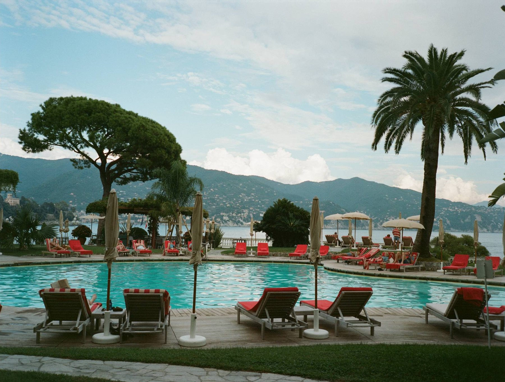
Santa Margherita Ligure
A beautifully restored grand hotel from 1904, in a real Italian beach town, at about half the price of the Splendido.
My review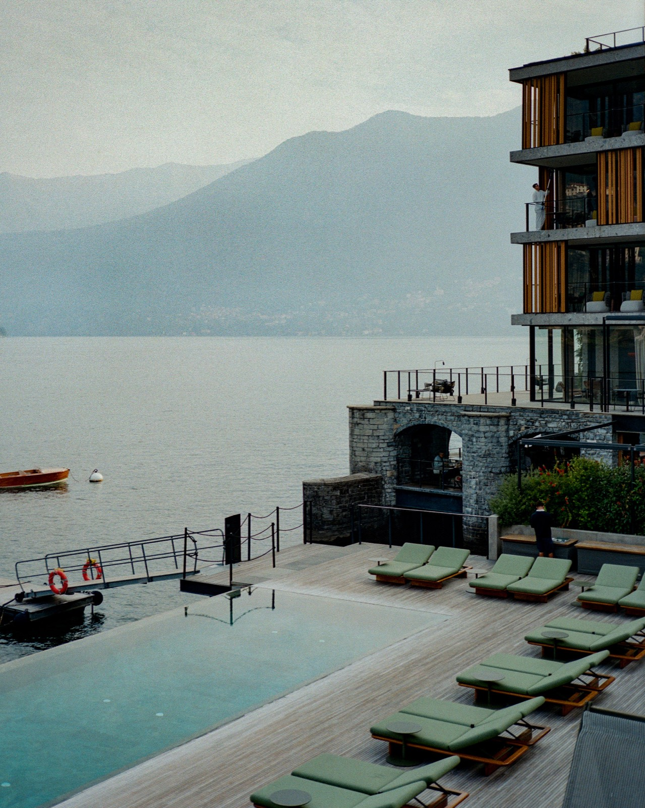
Torno, on the water
The best true lakefront hotel on Lake Como, with its own fleet of Rivas. I stayed in October and couldn't find a single fault.
My review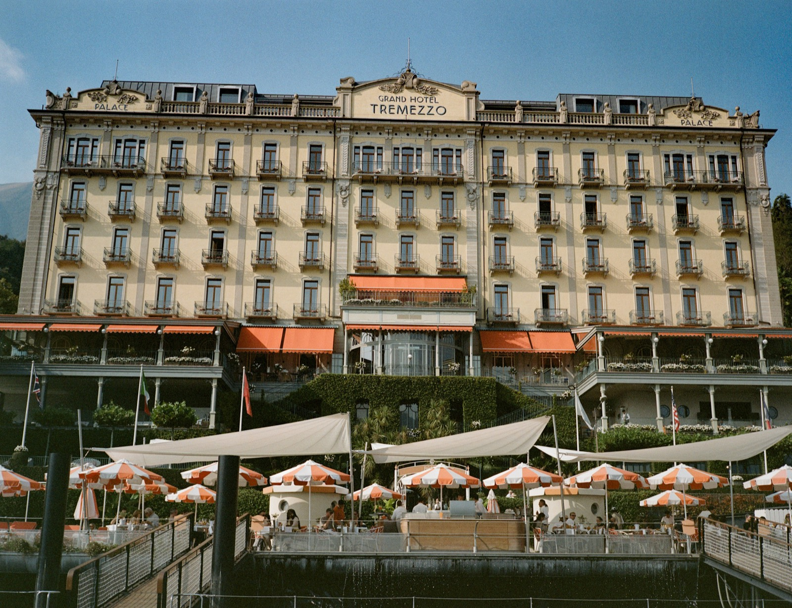
Tremezzo, facing Bellagio
Just a fun hotel. Tiered gardens, a pool on the water and lake-view junior suites looking straight across at Bellagio.
My reviewLike Amalfi, Lake Como doesn't really have a save tier. Both of these are splurges, and Tremezzo is the more relaxed of the two. For the biggest splurge on the lake, Passalacqua is the other one to look at.
Pricing Once you pick a direction, I'll quote both hotel tiers for your exact dates, with my Fora and Virtuoso perks: typically breakfast, a hotel credit and an upgrade when available. Private cars, boats and the days out are quoted separately.
Itinerary Three · Italy without the tourist cities
Amalfi → Tuscany → Lake Como → Dolomites
The sea, the vineyards, the lake and the mountains in one trip, and not a single big city. The helicopter is what makes it work.
The Journey
Arrival
Fly into Naples, then a private car or a 15-minute helicopter to the coast.
Amalfi to Tuscany, by helicopter
This is the leg where the helicopter really pays off. The road is about five hours. By air it's a short, very scenic flight up the coast and over the hills, landing close to your hotel.
Tuscany to Lake Como
About four and a half hours by private car, or another helicopter if you'd rather not lose the day.
Lake Como to the Dolomites, your choice
By car over the Stelvio Pass: one of the great mountain drives in Europe, with 48 hairpins, a long lunch and a full day of scenery. For outdoorsy people, the drive is part of the trip. By helicopter: a short flight over the Alps, weather permitting.
Departure
A private car to Venice airport, about two and a half to three hours.
This is the trip for people who want the most beautiful parts of Italy without any of the tourist cities. Every stop is about the landscape: cliffs and sea, then vineyards in the harvest, the lake by boat, and the jagged peaks of the Dolomites at the end.
The Feel · Rated
The Appeal
Four completely different landscapes · zero big cities · the best hiking of the four routes · a true once-in-a-lifetime trip.
Worth Noting
Four bases in fourteen nights is the fastest pace here · the helicopters add real cost · flights are always weather-dependent.
Keith's take: This is the dream version, and I'd be honest about the pace: about three or four nights everywhere. If that feels like too much, drop Lake Como and give the nights to Amalfi and the Dolomites.
About the helicopters. You don't have to take every one. The Amalfi to Tuscany flight is the one I'd keep, because it turns a full day in the car into an hour. Everything else works well by private car. Every flight is weather-dependent, and I always keep a car on hold as the backup.
About the Dolomites in late September. It's a beautiful, quiet time to be there. Most lifts are still running, though some mountain huts start closing for the season toward the end of the month, so I'll plan the hikes around what's open on your dates.
Days Out
Where You'd Stay
Just outside Positano
The classic, done properly. On the cliffs outside Positano, with a sunset beach club and boat shuttles into town.
My reviewAmalfi
Family-run for four generations, with a lido by the sea and staff who have been there for decades.
My reviewThere's no real save option on the Amalfi Coast. For a helicopter arrival at Scala, Belmond Caruso in Ravello is the closest of the great hotels.
Val d'Orcia, near Montalcino
My top Tuscany pick. It's a 5,000-acre estate with its own Brunello winery, and you'll want a few days just to explore it.
My reviewChianti, outside Siena
The most well-rounded borgo in Tuscany, and a little closer to Lake Como for the next leg.
My reviewTorno, on the water
The best true lakefront hotel on the lake, with its own Rivas at the dock.
My reviewTremezzo, facing Bellagio
Gardens, a pool on the water and a lot of fun, looking straight across at Bellagio.
My reviewThere's no real save option on Lake Como either. Both of these are splurges. With only three nights here, it's a good place to spend more and save in Tuscany or the Dolomites instead.
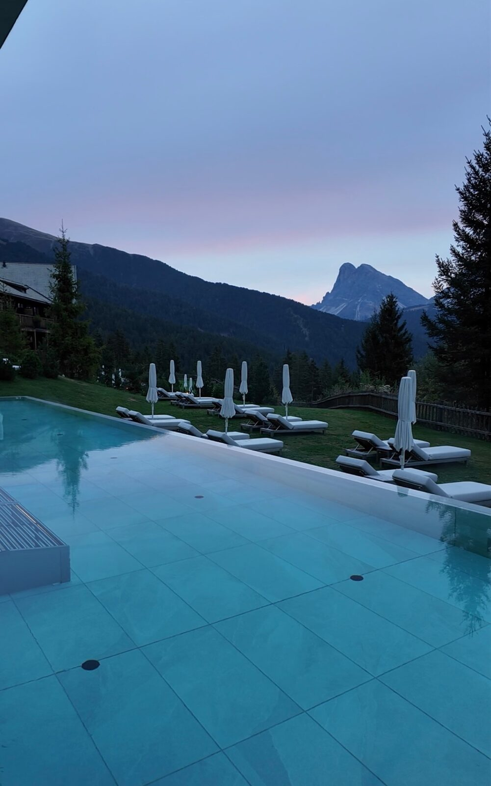
High above Bressanone
A wellness retreat with the best view of the Odle peaks of any luxury hotel in the Dolomites. It's built for peace and great food. It isn't the best base for hiking, so I'd add a guide for the big days.
My review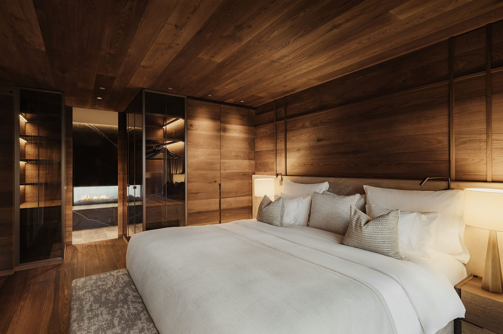
Ortisei, Val Gardena
A close second to Forestis for me, and the better base for active people. It's right in Ortisei, the best town for restaurants and hiking, with lifts from town up to Seceda.
My reviewDolomites hotels run about €1,000 to €2,200 a night. Also worth a look: Aman Rosa Alpina in San Cassiano and COMO Alpina up on the Alpe di Siusi.
Pricing Once you pick a direction, I'll quote both hotel tiers for your exact dates, with my Fora and Virtuoso perks. Helicopters are quoted per flight, so we can price each leg both ways (car or helicopter) and decide one at a time.
Itinerary Four · The most memorable
Amalfi → Rome → La Dolce Vita → Dolomites
The coast, a short stay in Rome, then a night on La Dolce Vita Orient Express via Portofino to Venice, and on into the mountains.
The Journey
Arrival
Fly into Naples, then a private car or a 15-minute helicopter to the coast.
Rome
Two nights, with the private Colosseum tour on the full day. Every La Dolce Vita journey leaves from its own private lounge at Rome Ostiense, so Rome is the natural stop before the train.
La Dolce Vita Orient Express
Rome, Portofino and Venice: two days and one night on board, with a stop in Portofino along the way. You step off in Venice, where a driver takes you up into the Dolomites (about two and a half to three hours), or a helicopter if you'd like.
Departure
One last night in Venice on the way out, then fly home from Venice.
I toured La Dolce Vita in Rome in October 2026, and it's one of the most fun things I've done in this industry. It has 1960s Italian design, a dining car run by Heinz Beck's team, Champagne in the lounge before you board, and around 40 to 60 guests on board. It turns a travel day into the highlight of the trip.
The Feel · Rated
The Appeal
A night on the Orient Express · the coast and the mountains in one trip · five nights in each of the two best places · Rome kept short.
Worth Noting
The train runs on set dates, so it decides the rest of the trip · the cabins are compact, so bring a carry-on for the night on board.
Keith's take: If you're thinking about it, the answer is do it. The suites are small and it's social, but the whole experience is unforgettable. It's the trip you'll still be telling people about years later.
The train sets the dates. Rome, Portofino and Venice runs on a handful of set departures from May 2027, and Orient Express currently lists it from €3,500 per person for the one night. I'll check which departures fall between September 15 and 30, then build the Amalfi and Rome nights backwards from the train.
Want the train on a different route? It can also replace the Rome to Florence leg in Itinerary One, or be added to the start of Itinerary Three. The trip just needs to pass through Rome.
Days Out
Where You'd Stay
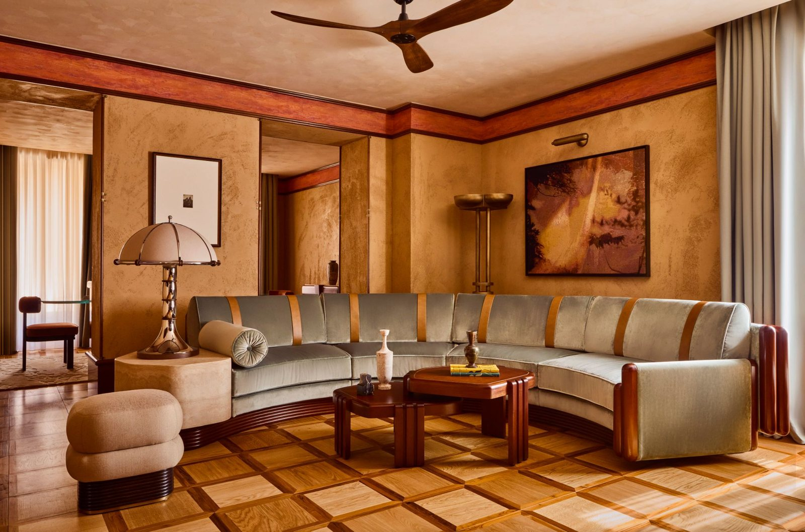
By the Pantheon
Orient Express's own hotel in Rome, so it's the natural pairing with the train. It has the warmest shared spaces and the friendliest team I found in Rome.
My reviewMonti
A small boutique hotel with real trattorias all around and a beautiful rooftop.
My reviewHigh above Bressanone
Peace, wellness, great food and the best view of the Odle peaks. It isn't the best base for hiking, so I'd book guided days out.
My reviewOrtisei, Val Gardena
A close second to Forestis for me, and the better hiking base. It's right in Ortisei, with lifts from town up to Seceda.
My reviewDolomites hotels run about €1,000 to €2,200 a night, and five nights there helps balance out the Amalfi splurge. For the last night in Venice, I'd pair the train with Orient Express Venice, its sister hotel, or put you at Aman Venice on the Grand Canal.
Pricing The train is priced per person by journey, cabin and date. Hotels are quoted in both tiers once you choose a direction. At La Minerva and Orient Express Venice, my clients typically get breakfast for two, a $100 hotel credit, an upgrade when available and a VIP welcome.
Side by Side
| OneThe Classic | TwoRiviera & Lake | ThreeThe Dream | FourOrient Express | |
|---|---|---|---|---|
| Outdoors | ||||
| Scenery | ||||
| Food & wine | ||||
| Relaxed pace | ||||
| Easy logistics | ||||
| Away from crowds | ||||
| Hotel changes | Four | Three | Four | Four, plus the train |
| Big-city time | Rome & Florence | A Florence day | None | Rome, one Venice night |
| Best suited for | A first trip to Italy | Truly relaxing | Hikers & dreamers | A trip with a story |
| Keith's recommendation | Most classic | Most relaxed | The dream | Most memorable |
The ratings are my honest read on these specific routes for people who would rather be outside than in a museum. Every hotel shown can be swapped between routes.
Pick a route, or the parts of two you like best, and tell me whether you're leaning splurge or smart pick. I'll come back with exact dates, real prices and the days out built in.
Email Keith